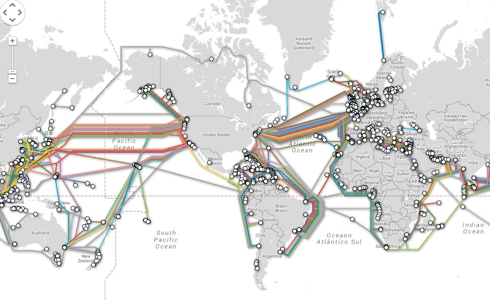

Redes de Computadores são estruturas que permitem a comunicação e o compartilhamento de recursos entre dois ou mais dispositivos — como computadores, celulares, impressoras, servidores e roteadores — conectados por meios físicos (cabos) ou sem fio (Wi-Fi). Elas existem para que os dispositivos possam trocar informações, acessar a internet, compartilhar arquivos e trabalhar juntos de forma rápida e segura.
O que uma rede possibilita?
Tipos de Redes
Elementos que formam uma rede
A internet é uma imensa rede global que conecta milhões de dispositivos, permitindo a troca de informações de forma rápida e segura. Ela é formada por uma grande infraestrutura física composta por cabos, servidores, antenas e equipamentos que transportam os dados. Além disso, conta com provedores que oferecem acesso aos usuários e com protocolos de comunicação que padronizam a forma como os dados são enviados e recebidos. Servidores espalhados pelo mundo hospedam sites, aplicativos e serviços, tornando possível acessar redes sociais, vídeos, e-mails e muito mais. Por fim, a participação dos usuários e de seus dispositivos completa todo esse ecossistema, tornando a internet uma ferramenta essencial para a comunicação e o funcionamento da sociedade moderna.
Uma rede mínima é a forma mais simples possível de uma rede de computadores, composta apenas pelos elementos essenciais para que dois dispositivos consigam se comunicar. Para que uma rede exista, é necessário ter pelo menos dois equipamentos conectados por algum tipo de meio de comunicação, como um cabo de rede, Wi-Fi ou até Bluetooth. Mesmo com essa estrutura reduzida, já é possível realizar troca de informações, enviar arquivos e estabelecer comunicação entre os aparelhos. Assim, a rede mínima representa o ponto de partida para qualquer rede maior e mais complexa, servindo como base para entender como os dispositivos se conectam e interagem dentro de um ambiente de rede.
A web, também conhecida como World Wide Web (WWW), é um conjunto de páginas, sites e conteúdos que podem ser acessados pela internet por meio de navegadores, como Chrome, Firefox ou Edge. Enquanto a internet é a rede mundial de computadores, a web é um dos serviços que funciona dentro dela, responsável pela navegação em sites, visualização de texto, imagens, vídeos e interação com plataformas online.
O que compõe a Web?
O mapa de fibra óptica (frequentemente chamado de submarine cable map quando mostra cabos submarinos) é uma representação gráfica das rotas físicas que conectam redes entre países e continentes — principalmente cabos de fibra óptica subaquáticos e também enlaces terrestres e estações de aterragem (landing stations). Esses mapas mostram onde os cabos passam pelo oceano, onde tocam a costa e quais sistemas ou consórcios são responsáveis por cada rota.

Os principais componentes de hardware de uma rede Wi-Fi são os equipamentos físicos que permitem a comunicação sem fio entre dispositivos. Aqui está uma explicação clara e organizada:
Os principais componentes de hardware de uma rede local com cabo (rede Ethernet) são os equipamentos físicos que permitem a comunicação entre computadores usando cabos de rede. Aqui está uma explicação clara e objetiva:
Componentes de hardware de uma rede local com cabo (LAN Ethernet)
Um protocolo de comunicação é um conjunto de regras, normas e procedimentos que definem como dois ou mais dispositivos trocam informações dentro de uma rede. Em outras palavras, é como o “idioma” que os aparelhos usam para se entender.
O modelo OSI (Open Systems Interconnection) é um modelo de referência criado pela ISO que divide o funcionamento de uma comunicação em rede em 7 camadas, cada uma com funções específicas. Ele serve para padronizar como os dispositivos se comunicam e facilitar o entendimento, projeto e solução de problemas em redes.
O modelo OSI é como uma “escada” com 7 degraus. Cada camada faz uma parte do trabalho até que a mensagem chegue ao destino. Quando um computador envia dados, eles descem pelas camadas; quando chegam ao outro computador, sobem as camadas novamente.
As 7 camadas do modelo OSI
O modelo TCP/IP é o conjunto de protocolos que realmente funciona na internet hoje. Ele foi criado antes do modelo OSI e é mais simplificado, dividido em 4 camadas principais, cada uma responsável por uma parte da comunicação entre dispositivos. Enquanto o OSI é um modelo teórico, o TCP/IP é prático, usado na vida real em redes e na internet.
As 4 camadas do modelo TCP/IP
O IPv4 e o IPv6 são versões do protocolo IP (Internet Protocol), responsável por endereçar e identificar cada dispositivo em uma rede, permitindo que os dados cheguem ao destino correto — como se fossem “endereços de casas” na internet.
As 4 camadas do modelo TCP/IP
O HTTP (HyperText Transfer Protocol) é o protocolo de comunicação usado para acessar páginas e serviços na web. Ele define como clientes (como navegadores) e servidores trocam mensagens, solicitando e enviando conteúdos como textos, imagens, vídeos e dados.
O HTTPS (HyperText Transfer Protocol Secure) é a versão segura do HTTP, usada para acessar sites e serviços na web com criptografia. Ele garante que os dados enviados entre o navegador e o servidor não possam ser lidos, alterados ou roubados por terceiros.
Um exemplo muito utilizado de framework para trabalhar com o protocolo HTTP em Node.js é o Express.js. Ele facilita a criação de servidores web, o tratamento de rotas, requisições e respostas HTTP, além de permitir a construção de APIs de forma simples e eficiente. É atualmente o framework mais popular do ecossistema Node.js. Exemplo simples usando Express.js:
const express = require('express');
const app = express();
app.get('/', (req, res) => {
res.send('Servidor HTTP funcionando com Express!');
});
app.listen(3000, () => {
console.log('Servidor rodando na porta 3000');
});const express = require('express')
const app = express()
const cors = require('cors')
// PORT do TCP
const PORT = 3000
// endereço IP = 127.0.0.1 do servidor de teste
const hostname = 'localhost'
// ------------ Middleware ---------------------
app.use(express.urlencoded({extended: true}))
app.use(express.json())
app.use(cors())
// ---------------------------------------------
app.get('/', (req,res)=>{
res.status(200).json({message: 'Aplicação Rodando!'})
})
app.get('/login', (req,res)=>{
const email_bd = 'carlos@gmail.com'
const senha_bd = 123
const dados = {
email: email_bd,
senha: senha_bd
}
res.status(200).json(dados)
})
app.post('/login', (req,res)=>{
const email_bd = 'carlos@gmail.com'
const senha_bd = 123
const valores = req.body
console.log(valores)
if(email_bd === valores.email){
if(senha_bd === valores.senha){
return res.status(200).json({
message: 'login realizado com sucesso!',
nome: valores.nome,
statusLog: 'true'
})
}else{
return res.status(403).json({ message: 'Acesso não autorizado!'})
}
}else{
return res.status(404).json({message: 'Usuário não encontrado'})
}
})
// ---------------- Server ---------------------
app.listen(PORT, hostname, ()=>{
console.log(`http://${hostname}:${PORT}`)
})const express = require('express')
const app = express()
const cors = require('cors')
const PORT = 3000
const hostname = 'localhost' // ip = 127.0.0.1 - servidor de teste
// ------- config middleware -----------------
app.use(express.urlencoded({extended: true}))
app.use(express.json())
app.use(cors())
// -------------------------------------------
app.post('/usuario', (req,res)=>{
const dados = req.body
console.log('nome:', dados)
res.status(200).json({message: 'dados recebidos ', dados})
})
app.get('/', (req,res)=>{
res.status(200).json({message: 'Olá mundo!'})
})
// ------------- Server ----------------------
app.listen(PORT, hostname, ()=>{
console.log(`Servidor rodando em http://${hostname}:${PORT}`)
})const express = require('express')
const app = express()
const cors = require('cors')
const PORT = 3000 // endereço TCP
const hostname = 'localhost' // 127.0.0.1 endereço IP
// --------- middleware ------------------------
app.use(express.urlencoded({extended: true}))
app.use(express.json())
app.use(cors())
// ---------------------------------------------
app.get('/', (req,res)=>{
res.status(200).json({message: 'aplicação rodando'})
})
app.get('/teste', (req,res)=>{
const nome = 'Ueslei'
res.status(200).json({message: 'mensagem do nome:', nome})
})
app.post('/usuario', (req,res)=>{
const valores = req.body
console.log(valores)
res.status(200).json({message: 'dados recebidos!'})
})
// --------------------------------------------
app.listen(PORT,hostname, ()=>{
console.log(`Servidor http://${hostname}:${PORT}`)
})